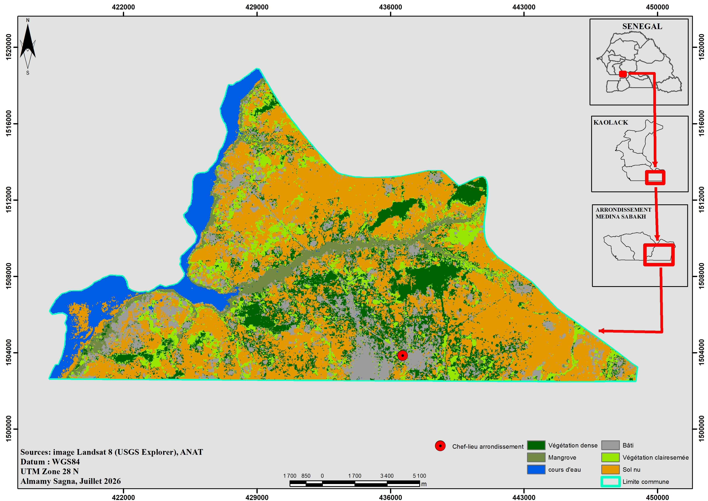

Almamy Sagna
Géographe/Spécialiste SIG
Géographe et Spécialist SIG basé au Sénégal, je suis prestataire à l'ANSD et prépare un Master en Géographie à l'UCAD parcours Environnement, Territoire, Population et Santé. Je conçois des cartes, des analyses spatiales et des applications web interactives au service de l'aide à la décision, avec un intérêt particulier pour la vulnérabilité climatique des territoires et la santé .
Domaines d'implication
- Analyse spatiale et cartographie thématique
- Télédétection et occupation du sol (Landsat, classification supervisée, Google Earth Engine)
- Climat, environnement et santé : vulnérabilité climatique, îlots de chaleur, résilience du système de santé
- Collecte de données de terrain (CSEntry, KoboToolbox)
- Cartographie web
Compétences
- SIG : ArcGIS, QGIS
- Télédétection : Google Earth Engine, Copernicus, Usgs Explorer
- Programmation et données : Python (pandas, NumPy), SQL, PostgreSQL, PostGIS
- Collecte : CSEntry (CSPro), KoboToolbox
Mes projets
- CARTE D'OCCUPATION DU SOL DE LA COMMUNE DE MEDINA SABAKH (2026)

- SEN MAP DATA : plateforme cartographique interactive
- ZigTemp : Application web de gestion des ilots de chaleur
- Projet Mémoire de master : Ziguinchor
Contact
E-mail : almamysagna59@gmail.com